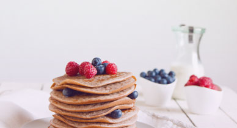
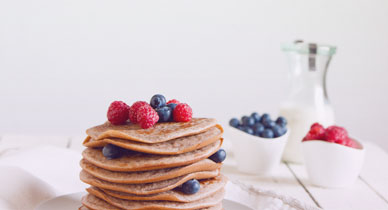

10 receitas de café da manhã saudável em até 5 minutos | Minha Vida
2021.06.21 21:33
Descobertas Deliciosas
Oferecido por HOME|
RECEITAS|
MATÉRIAS10 receitas de café da manhã saudável em até 5 minutos
Receitas ajudam a agilizar suas manhãs e te deixam pronto para começar o dia cheio de energia
Escrito por Redação Redação Minha Vida Em 28/12/2020compartilhar
salvar
compartilhar
A correria do dia a dia faz com que muita gente esqueça de realizar o café da manhã , ou acabe comendo algo já pronto, sem pensar se a refeição está adequada. Essa prática não é indicada pelos especialistas, que reforçam a importância de fazer a primeira refeição do dia repleta de nutrientes. Entre eles: proteínas, vitaminas, minerais e carboidratos.
"O café da manhã é super importante e faz com que o nosso metabolismo volte a funcionar corretamente, pois durante a noite ele fica mais lento. Dessa forma, ele gasta as calorias que o corpo necessita", explica a nutricionista Daniela Jobst.
Pensando nisso, selecionamos 10 receitas de café da manhã que podem ser feitas em até cinco minutos, para você nunca mais deixar essa refeição passar batido do seu dia:
NÃO PARE AGORA TEM MAIS DEPOIS DA PUBLICIDADE ;)
1. Bolo de chocolate com 3 ingredientes
Bolo de chocolate com 3 ingredientes: fácil de fazer e super saboroso
2. Crepioca de banana
Crepioca de banana: receita incrível e saborosa
3. Quiche de caneca de micro-ondas
Quiche de caneca de micro-ondas: receita fácil de fazer e muito saborosa
4. Omelete verde
Omelete verde: experimente essa receita de omelete fácil e saudável
5. Brownie de frigideira
Brownie de frigideira: uma receita deliciosa e funcional
Saiba mais: Leite condensado saudável leva apenas 3 ingredientes6. Pão de queijo de frigideira light
Pão de queijo de frigideira light: receita fácil e saudável
7. Panqueca de farelo de aveia light
Panqueca de farelo de aveia light: gostosa e funcional
8. Wrap de omelete
Wrap de omelete: feito com pão integral e rico em proteínas
9. Tapioca com recheio leve de maçã
Tapioca com recheio leve de maçã: deliciosa e fica pronta em 5 minutos!
10. Receita de crepioca light de chocolate
Receita de crepioca light de chocolate: uma delícia que cabe na dieta
Café da manhã para quem quer emagrecer
PUBLICIDADE
TAGs: café da manhã
comentar
compartilhar
salvar
imprimir
erro?
compartilhar
ver comentários
TAGs: café da manhã
comentar
compartilhar
salvar
imprimir
erro?
compartilhar
ver comentários
TAGs: café da manhã
comentar
compartilhar
salvar
imprimir
erro?
compartilhar
ver comentários
VIVA MAIS E MELHOR:
SIGA O MINHA VIDA
HOME QUEM SOMOS POLÍTICAS TRABALHE CONOSCO ANUNCIE FALE CONOSCO NÓS ADERIMOS AOS PRINCÍPIOS DA CARTA HONCODE. VERIFIQUE AQUI *AS INFORMAÇÕES E SUGESTÕES CONTIDAS NESTE SITE TÊM CARÁTER MERAMENTE INFORMATIVO. ELAS NÃO SUBSTITUEM O ACONSELHAMENTO E ACOMPANHAMENTOS DE MÉDICOS, NUTRICIONISTAS, PSICÓLOGOS, PROFISSIONAIS DE EDUCAÇÃO FÍSICA E OUTROS ESPECIALISTAS.* ÚLTIMA ATUALIZAÇÃO DO SITE: 21/06/2021. COPYRIGHT 2006/2021 MINHA VIDA TODOS OS DIREITO RESERVADOSO MINHA VIDA FAZ PARTE DO GRUPO WEBEDIA
- 13 dicas para um café da manhã nutritivo - Caldo Bom
- Receitas de café da manhã: 7 opções para sair da rotina .
- 10 receitas de café da manhã saudável em até 5 minutos .
- Especial café da manhã - Panelinha
- Receita de Panqueca americana | CyberCook
- 8 sugestões para um café da manhã saudável, delicioso e .
- → 20 melhores RECEITAS PARA O CAFÉ DA MANHÃ .
- 11 receitas para o café da manhã para começar o dia bem
- 15 ideias de café da manhã para começar o dia bem
- 32 receitas que vão te ajudar a preparar um café da manhã .
- 13 dicas para um café da manhã nutritivo - Caldo Bom
- Receitas de café da manhã: 7 opções para sair da rotina .
- 10 receitas de café da manhã saudável em até 5 minutos .
- Especial café da manhã - Panelinha
- Receita de Panqueca americana | CyberCook
- 8 sugestões para um café da manhã saudável, delicioso e .
- → 20 melhores RECEITAS PARA O CAFÉ DA MANHÃ .
- 11 receitas para o café da manhã para começar o dia bem
- 15 ideias de café da manhã para começar o dia bem
10 saudável em até 5 minutos · 1. Bolo de chocolate com 3 ingredientes · 2 . - 32 receitas que vão te ajudar a preparar um café da manhã .
10 saudável em até 5 minutos · 1. Bolo de chocolate com 3 ingredientes · 2 .
 
